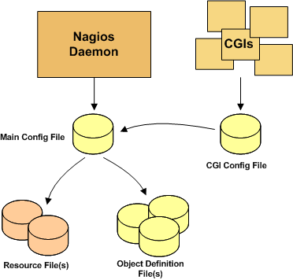

Up To: Contents
Up To: Contents
 See Also: Main Configuration File, Object Configuration Overview, CGI Configuration File
See Also: Main Configuration File, Object Configuration Overview, CGI Configuration File
Introduction
There are several different configuration files that you're going to need to create or edit before you start monitoring anything. Be patient! Configuring Nagios can take quite a while, especially if you're first-time user. Once you figure out how things work, it'll all be well worth your time. :-)
Note: Sample configuration files are installed in the /usr/local/nagios/etc/ directory when you follow the quickstart installation guide.
Main Configuration File
The main configuration file contains a number of directives that affect how the Nagios daemon operates. This config file is read by both the Nagios daemon and the CGIs. This is where you're going to want to get started in your configuration adventures.
Documentation for the main configuration file can be found here.
Resource File(s)
Resource files can be used to store user-defined macros. The main point of having resource files is to use them to store sensitive configuration information (like passwords), without making them available to the CGIs.
You can specify one or more optional resource files by using the resource_file directive in your main configuration file.
Object Definition Files
Object definition files are used to define hosts, services, hostgroups, contacts, contactgroups, commands, etc. This is where you define all the things you want monitor and how you want to monitor them.
You can specify one or more object definition files by using the cfg_file and/or cfg_dir directives in your main configuration file.
An introduction to object definitions, and how they relate to each other, can be found here.
CGI Configuration File
The CGI configuration file contains a number of directives that affect the operation of the CGIs. It also contains a reference the main configuration file, so the CGIs know how you've configured Nagios and where your object defintions are stored.
Documentation for the CGI configuration file can be found here.